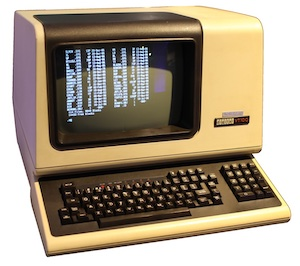
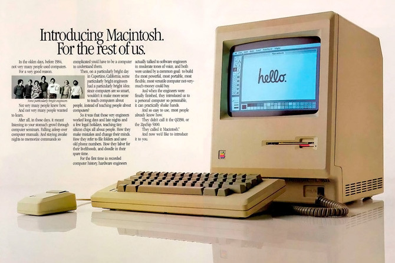
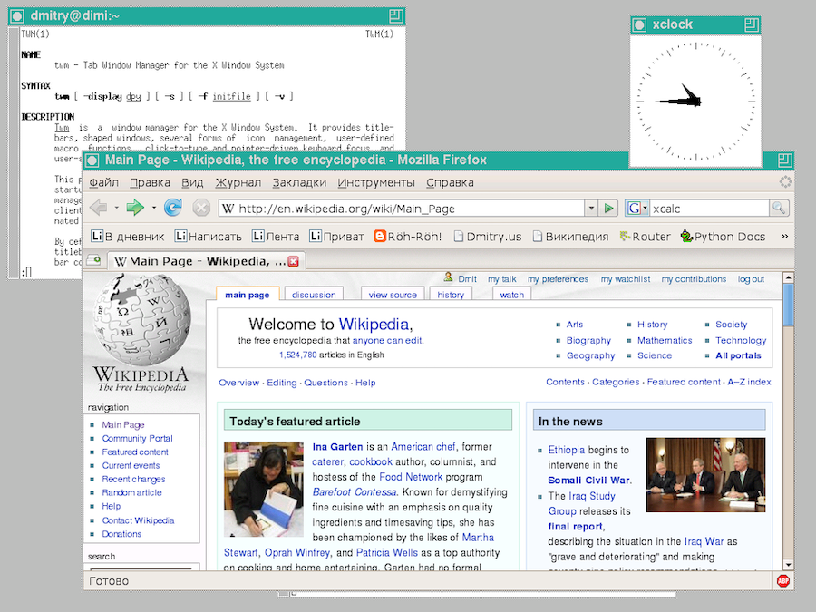

El escritorio de Linux¶
Al ser Linux una recopilación de software libre, con frecuencia tendremos varios programas alternativos para la misma tarea. Un claro ejemplo es el programa de escritorio.
Cada distribución hace su propia selección de programas, incluyendo su escritorio favorito. Los hay más populares que otros, no habiendo un ganador claro. De todas formas, muchas distribuciones nos permiten elegir entre uno u otro escritorio. Veamos cuales son los más populares
Los orígenes¶
Ya hemos visto que las primeras pantallas funcionaban en forma de consolas donde se mostraba texto, que se desplazaba hacia arriba a medida que el diálogo entre usuario y máquina se iba produciendo:

El concepto de escritorio gráfico fue inventado en 1970 por el fabricante de fotocopiadoras XEROX, quien fundó un centro de investigación llamado XEROX PARC, en Palo Alto, California, con la idea de desarrollar nuevas tecnologías e introducirse en el mercado de los ordenadores.
Aquellos primeros programas de escritorio se limitaban a imágenes de baja resolución, en blanco y negro, pero era un primer paso.

En 1979, un acuerdo de Xerox con Apple para intercambiar tecnologías inspiró el lanzamiento del popular Macintosh:

Microsoft copió la idea, y la década de los noventa fue testigo de la generalización de los escritorios gráficos, en buena parte gracias al lanzamiento de Windows 3.
Escritorios de Unix¶
Otra iniciativa de los años ochenta fue la del MIT (Instituto de Tecnología de Massachusetts) que desarrolló un sistema gráfico para UNIX, llamado "X Window System". No era un escritorio, sino un software que permitía ejecutar varios programas a la vez en ventanas separadas:

Basándose en este estándar, surgieron varios programas de escritorio para Unix. Uno de los más populares fue CDE, abreviatura de Common Desktop Environment, creado en 1993 por un grupo de empresas formado por Hewlett-Packard, IBM, Novell y Sun Microsystems.

Escritorios para Linux¶
Las primeras versiones de Linux funcionaban solo con un shell de texto. En 1996, el programador alemán Matthias Ettrich se inspiró en el escritorio CDE para crear KDE, considerado en la actualidad como uno de los más potentes y completos. Incorpora multitud de herramientas complementarias, y tiene un comportamiento bastante similar a Windows.

KDE está desarrollado por una amplia comunidad de programadores, pero no está exento de polémica. En sus inicios, algunos de los componentes no eran software libre, cosa que se ha ido solucionando con el paso del tiempo.
Con el paso del tiempo, el proyecto KDE se ha dividido en varias ramas de desarrollo:
- el escritorio ha pasado a llamarse Plasma
- aplicaciones KDE que acompañan al escritorio, editor de textos, calculadora, etc.
- Plasma Mobile, un escritorio para dispositivos móviles
Para hacer frente al problema de licencias de KDE, los mexicanos Miguel de Icaza y Federico Mena crearon en 1997 el escritorio GNOME, como parte del proyecto GNU. El nombre es un acrónimo de "GNU Network Object Model Environment".
En la actualidad GNOME parece ser el escritorio oficial de la mayoría de distribuciones.

Durante los primeros años del siglo actual, KDE y Gnome fueron los dos escritorios más populares. Pero el lanzamiento en 2011 de la versión 3 de GNOME produjo un gran aluvión de críticas por su usabilidad. Tenía como propósito proporcionar una experiencia parecida al comportamiento de las tablets, alejándose del concepto clásico de escritorio al que los usuarios estaban acostumbrados. Esto hizo que muchas personas prefirieran seguir usando GNOME 2, y que por otra parte surgiera un proyecto paralelo denominado MATE, derivado de GNOME 2 y orientado a proporcionar un escritorio con aspecto más tradicional.

MATE está concebido para usuarios que quieran un escritorio clásico con poco consumo de recursos, y sin tantos efectos especiales como pueden proporcionar las versiones actuales de GNOME.
Cuando GNOME 3 hizo su aparición, los responsables de Linux Mint descartaron incorporarlo a su distribución, y optaron por seguir con GNOME 2. Dado que este ya no iba a seguir evolucionando, incorporaron MATE y se involucraron en su desarrollo. Pero ante lo confuso de la situación, decidieron abordar en paralelo un proyecto de escritorio propio denominado Cinnamon. En la actualidad, Mint se distribuye con ambas alternativas, MATE y Cinnamon, siendo esta última la versión oficial.

Otra de las consecuencias de la polémica surgida en torno a GNOME 3 fue el anuncio por parte de Ubuntu de lanzar su propio escritorio denominado Unity.

Unity también se alejaba del concepto clásico de escritorio, estando concebido para todo tipo de dispositivos, ordenadores, tablets, TV, etcétera. Pero tampoco ha estado exento de polémica. Desde su lanzamiento, se vió que los requerimientos de hardware eran elevados, y que su rendimiento en ordenadores de gama baja era limitado, resultando muy lento en su funcionamiento. Con el tiempo se han ido resolviendo estos problemas, pero Unity no ha llegado a convertirse en una alternativa al resto de escritorios. En 2017, los responsables de Ubuntu anunciaron su apuesta por las versiones recientes de GNOME, dejando relegado a Unity.
Como alternativa a la guerra de escritorios y sus prestaciones gráficas, si buscamos un escritorio sencillo, vistoso y que consuma pocos recursos, probablemente la versión más popular sea Xfce, presente en muchas distribuciones como alternativa a otros escritorios más potentes. Xfce es una buena opción si tenemos un ordenador antiguo o si estamos trabajando con una máquina virtual y tenemos problemas de rendimiento.

Otra alternativa de escritorio ligero es lxde. De lxde se deriva el proyecto LxQt. Existen otros proyectos minoritarios, como es el caso de Budgie o Pantheon.
Seleccionar un escritorio¶
Hay distribuciones que se publican con un escritorio predeterminado, y otras que nos dan la opción de elegir entre uno u otro. ¿Que escritorio elegir? Un resumen de pros y contras:
-
Xfce: si nuestro equipo es de recursos reducidos en cuanto a memoria RAM o capacidad de la CPU, la elección es clara; debemos decidirnos por un escritorio sencillo y sin grandes alardes gráficos, como Xfce.
Inconvenientes: tiene un aspecto y funcionamiento algo anticuado.
-
KDE Plasma:
- es el escritorio más completo y potente, con muchas funcionalidades
- tiene un aspecto tradicional, parecido a Windows.
Inconvenientes:
- es algo complicado de utilizar, dada la cantidad de opciones que tiene
- debido a su complejidad, las nuevas versiones suelen ser propensas a pequeños fallos, especialmente en el caso de máquinas virtuales, problemas que con el tiempo son corregidos por la comunidad que lo mantiene.
-
Cinnamon: tiene un aspecto tradicional, es amigable, fácil de usar e instalar.
Inconvenientes:
- es desarrollado por Linux Mint, una comunidad algo reducida
- no todas las distribuciones lo incluyen.
-
Gnome:
- es el escritorio oficial del proyecto GNU, y de alguna forma, es la referencia
- muchas distribuciones optan por Gnome como escritorio por defecto, aunque admiten otras posibilidades
- tiene un aspecto visual simple y agradable
- es un escritorio minimalista y sencillo de usar
Inconvenientes:
-
se sale del concepto de escritorio tradicional, con un aspecto más parecido al de las tablets. Para un usuario habituado a Windows, costará un poco adaptarse.
-
es tan minimalista que carece de muchas funcionalidades presentes en otros escritorios. Por poner algunos ejemplos, en el momento de escribir esto, no cuenta con un menú desplegable de aplicaciones. En su lugar, tenemos una rejilla de iconos en el escritorio, al estilo de los teléfonos móviles. Tampoco permite arrastrar iconos sobre el escritorio, pongamos por caso.
-
Gnome con extensiones
Podemos solucionar las carencias de Gnome instalado alguna de las extensiones disponibles.
Inconvenientes:
-
Muchas de esas extensiones son contribuciones de terceras personas, pudiendo coincidir en su propósito y competir entre sí. Esto nos obliga a probarlas para ver cual es la que más nos conviene.
-
Algunas extensiones pueden estar desactualizadas, no adaptándose a la versión más reciente del escritorio que tenemos instalado, y generando algunos fallos.
-
-
Versión Gnome de Ubuntu: Ubuntu proporciona un escritorio Gnome mejorado, con extensiones seleccionadas, configuradas y listas para su uso.